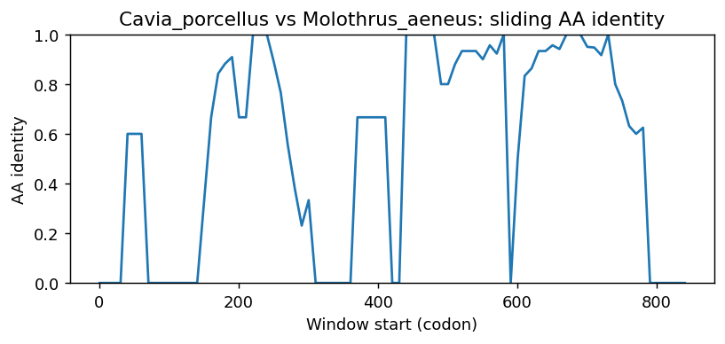

Ortholog Divergence Report
Input: RBBP7.valid.longest.fa · N sequences: 374 · Aligned length: 850 codons
Reference: Cavia_porcellus
Quick risk overview
- LOW: 0
- INTERMEDIATE: 0
- HIGH: 69751


Composition & complexity per sequence
Saved as per_sequence_composition.csv. High low-complexity or repeat content can reduce BLAST sensitivity due to soft masking.
| id | GC | GC skew | CpG dens. | AA LCR frac | NT repeat frac | AA len | CDS len |
|---|---|---|---|---|---|---|---|
| Cavia_porcellus | 0.45333 | 0.05536 | 0.02119 | 0.0 | 0.76235 | 425 | 1275 |
| Camelus_dromedarius | 0.47761 | 0.08333 | 0.03058 | 0.0 | 0.72495 | 469 | 1407 |
| Mustela_nigripes | 0.47903 | 0.07418 | 0.03272 | 0.02559 | 0.73348 | 469 | 1407 |
| Leptonychotes_weddellii | 0.47122 | 0.09804 | 0.02774 | 0.03412 | 0.73632 | 469 | 1407 |
| Gorilla_gorilla_gorilla | 0.43901 | 0.07593 | 0.01987 | 0.0 | 0.75532 | 470 | 1410 |
| Lepidothrix_coronata | 0.46148 | 0.11073 | 0.02124 | 0.0 | 0.75708 | 424 | 1272 |
| Rhea_pennata | 0.44733 | 0.08612 | 0.01652 | 0.0 | 0.75393 | 424 | 1272 |
| Octodon_degus | 0.48188 | 0.06195 | 0.03272 | 0.0 | 0.74911 | 469 | 1407 |
| Hippopotamus_amphibius_kiboko | 0.44863 | 0.08392 | 0.02433 | 0.0 | 0.75922 | 425 | 1275 |
| Ursus_arctos | 0.4502 | 0.06272 | 0.02355 | 0.0 | 0.75216 | 425 | 1275 |
| Onychomys_torridus | 0.43529 | 0.06667 | 0.01491 | 0.0 | 0.78196 | 425 | 1275 |
| Macaca_thibetana_thibetana | 0.46411 | 0.07504 | 0.0256 | 0.02772 | 0.72708 | 469 | 1407 |
| Chaetura_pelagica | 0.44473 | 0.04892 | 0.01481 | 0.0 | 0.73455 | 383 | 1149 |
| Pseudorca_crassidens | 0.45543 | 0.06579 | 0.02774 | 0.0 | 0.75655 | 445 | 1335 |
| Strigops_habroptila | 0.45912 | 0.11986 | 0.01888 | 0.0 | 0.75629 | 424 | 1272 |
| Spea_bombifrons | 0.43774 | 0.08834 | 0.01935 | 0.0 | 0.74478 | 431 | 1293 |
| Microtus_ochrogaster | 0.43686 | 0.07002 | 0.01413 | 0.0 | 0.78196 | 425 | 1275 |
| Pongo_abelii | 0.46055 | 0.05864 | 0.02632 | 0.02772 | 0.73845 | 469 | 1407 |
| Hyla_sarda | 0.43216 | 0.10708 | 0.0102 | 0.0 | 0.74118 | 425 | 1275 |
| Columba_livia | 0.45656 | 0.08304 | 0.01818 | 0.0 | 0.78594 | 422 | 1266 |
| Geospiza_fortis | 0.46425 | 0.06865 | 0.01466 | 0.03101 | 0.75624 | 387 | 1161 |
| Urocitellus_parryii | 0.43922 | 0.08214 | 0.01962 | 0.0 | 0.77255 | 425 | 1275 |
| Harpia_harpyja | 0.45204 | 0.12 | 0.02203 | 0.0 | 0.75943 | 424 | 1272 |
| Charadrius_vociferus | 0.45283 | 0.11111 | 0.02046 | 0.0 | 0.76651 | 424 | 1272 |
| Neogale_vison | 0.47761 | 0.0744 | 0.03272 | 0.02559 | 0.73561 | 469 | 1407 |
| Ovis_aries | 0.47193 | 0.09639 | 0.02845 | 0.02559 | 0.73987 | 469 | 1407 |
| Balaenoptera_ricei | 0.4502 | 0.08362 | 0.0259 | 0.0 | 0.75451 | 425 | 1275 |
| Muntiacus_reevesi | 0.45333 | 0.0692 | 0.02276 | 0.0 | 0.7451 | 425 | 1275 |
| Empidonax_traillii | 0.46541 | 0.11149 | 0.02203 | 0.0 | 0.77358 | 424 | 1272 |
| Dendropsophus_ebraccatus | 0.44078 | 0.11388 | 0.02119 | 0.0 | 0.74588 | 425 | 1275 |
| Otolemur_garnettii | 0.43649 | 0.07422 | 0.01792 | 0.0 | 0.75959 | 391 | 1173 |
| Athene_cunicularia | 0.44017 | 0.09126 | 0.01369 | 0.0 | 0.73675 | 390 | 1170 |
| Dermochelys_coriacea | 0.44 | 0.05882 | 0.02041 | 0.0 | 0.71686 | 425 | 1275 |
| Camelus_ferus | 0.45333 | 0.0692 | 0.02355 | 0.0 | 0.75059 | 425 | 1275 |
| Mus_pahari | 0.44157 | 0.06572 | 0.01413 | 0.0 | 0.75059 | 425 | 1275 |
| Ursus_americanus | 0.4502 | 0.06272 | 0.02355 | 0.0 | 0.75216 | 425 | 1275 |
| Lynx_canadensis | 0.45333 | 0.05882 | 0.02904 | 0.0 | 0.75373 | 425 | 1275 |
| Phacochoerus_africanus | 0.48045 | 0.09172 | 0.03841 | 0.0 | 0.71713 | 469 | 1407 |
| Myiozetetes_cayanensis | 0.45676 | 0.1165 | 0.01997 | 0.0 | 0.74945 | 451 | 1353 |
| Equus_caballus | 0.45255 | 0.07106 | 0.02355 | 0.0 | 0.75216 | 425 | 1275 |
| Orycteropus_afer_afer | 0.44863 | 0.06993 | 0.02041 | 0.0 | 0.78118 | 425 | 1275 |
| Crocodylus_porosus | 0.43604 | 0.08779 | 0.01308 | 0.0 | 0.74323 | 357 | 1071 |
| Lonchura_striata | 0.47799 | 0.09539 | 0.01967 | 0.0 | 0.74843 | 424 | 1272 |
| Marmota_marmota_marmota | 0.45018 | 0.08917 | 0.0208 | 0.0 | 0.76559 | 465 | 1395 |
| Bos_javanicus | 0.47193 | 0.09337 | 0.02845 | 0.02559 | 0.73703 | 469 | 1407 |
| Capra_hircus | 0.45412 | 0.07772 | 0.02355 | 0.0 | 0.7451 | 425 | 1275 |
| Caretta_caretta | 0.44 | 0.07665 | 0.01962 | 0.0 | 0.72157 | 425 | 1275 |
| Molossus_molossus | 0.46225 | 0.08166 | 0.02566 | 0.0 | 0.74145 | 468 | 1404 |
| Cercocebus_atys | 0.46411 | 0.07198 | 0.0256 | 0.02772 | 0.72708 | 469 | 1407 |
| Lathamus_discolor | 0.44969 | 0.1049 | 0.01888 | 0.0 | 0.75629 | 424 | 1272 |
| Pogoniulus_pusillus | 0.59778 | -0.01115 | 0.05791 | 0.10667 | 0.67556 | 150 | 450 |
| Vidua_macroura | 0.47013 | 0.10702 | 0.01967 | 0.0 | 0.73978 | 424 | 1272 |
| Equus_asinus | 0.45255 | 0.06759 | 0.02355 | 0.0 | 0.75373 | 425 | 1275 |
| Microcaecilia_unicolor | 0.44 | 0.041 | 0.01413 | 0.0 | 0.74667 | 425 | 1275 |
| Geotrypetes_seraphini | 0.43216 | 0.05626 | 0.01334 | 0.0 | 0.75843 | 425 | 1275 |
| Melospiza_georgiana | 0.48333 | 0.09031 | 0.01986 | 0.0 | 0.77778 | 420 | 1260 |
| Mauremys_mutica | 0.43529 | 0.07748 | 0.01727 | 0.0 | 0.73333 | 425 | 1275 |
| Manacus_vitellinus | 0.45385 | 0.09605 | 0.01796 | 0.0 | 0.75726 | 390 | 1170 |
| Emydura_macquarii_macquarii | 0.44368 | 0.06346 | 0.01676 | 0.0 | 0.71233 | 438 | 1314 |
| Pseudophryne_corroboree | 0.43213 | 0.0925 | 0.01358 | 0.0 | 0.73605 | 442 | 1326 |
| Lagopus_leucura | 0.44575 | 0.097 | 0.0181 | 0.0 | 0.78302 | 424 | 1272 |
| Bos_indicus_x_Bos_taurus | 0.47122 | 0.09502 | 0.02703 | 0.02559 | 0.73419 | 469 | 1407 |
| Corvus_moneduloides | 0.49812 | 0.08157 | 0.0256 | 0.0 | 0.7389 | 443 | 1329 |
| Rhinopithecus_roxellana | 0.46269 | 0.06605 | 0.02347 | 0.0 | 0.72281 | 469 | 1407 |
| Trachemys_scripta_elegans | 0.43765 | 0.07527 | 0.01648 | 0.0 | 0.72863 | 425 | 1275 |
| Cervus_elaphus | 0.4705 | 0.09668 | 0.02774 | 0.0 | 0.72424 | 469 | 1407 |
| Macaca_fascicularis | 0.4634 | 0.07055 | 0.02489 | 0.02772 | 0.72708 | 469 | 1407 |
| Protopterus_annectens | 0.4298 | 0.06569 | 0.01413 | 0.0 | 0.70588 | 425 | 1275 |
| Pygoscelis_adeliae | 0.45385 | 0.08851 | 0.02566 | 0.0 | 0.7359 | 390 | 1170 |
| Myotis_myotis | 0.45412 | 0.06736 | 0.02355 | 0.0 | 0.74196 | 425 | 1275 |
| Piliocolobus_tephrosceles | 0.4634 | 0.07975 | 0.02418 | 0.02772 | 0.73703 | 469 | 1407 |
| Peromyscus_californicus_insignis | 0.43608 | 0.06835 | 0.01413 | 0.0 | 0.77176 | 425 | 1275 |
| Mirounga_leonina | 0.45647 | 0.06873 | 0.02433 | 0.0 | 0.75686 | 425 | 1275 |
| Moschus_berezovskii | 0.44863 | 0.07343 | 0.02198 | 0.0 | 0.74667 | 425 | 1275 |
| Hyaena_hyaena | 0.47548 | 0.09716 | 0.03201 | 0.02559 | 0.7484 | 469 | 1407 |
| Camelus_bactrianus | 0.45333 | 0.0692 | 0.02355 | 0.0 | 0.75059 | 425 | 1275 |
| Myotis_daubentonii | 0.45725 | 0.07033 | 0.02512 | 0.0 | 0.74039 | 425 | 1275 |
| Halichoerus_grypus | 0.47406 | 0.10045 | 0.02916 | 0.02559 | 0.73774 | 469 | 1407 |
| Mesitornis_unicolor | 0.45912 | 0.10274 | 0.02203 | 0.0 | 0.76415 | 424 | 1272 |
| Zonotrichia_leucophrys_gambelii | 0.47066 | 0.06733 | 0.0188 | 0.0 | 0.81221 | 284 | 852 |
| Lontra_canadensis | 0.4769 | 0.07601 | 0.03129 | 0.02559 | 0.73205 | 469 | 1407 |
| Neopelma_chrysocephalum | 0.46384 | 0.11525 | 0.0236 | 0.0 | 0.77437 | 424 | 1272 |
| Corapipo_altera | 0.46148 | 0.11414 | 0.02046 | 0.0 | 0.7673 | 424 | 1272 |
| Caloenas_nicobarica | 0.45676 | 0.09466 | 0.01888 | 0.0 | 0.78852 | 424 | 1272 |
| Mustela_lutreola | 0.45804 | 0.05822 | 0.02669 | 0.0 | 0.75373 | 425 | 1275 |
| Lagenorhynchus_albirostris | 0.45176 | 0.07639 | 0.02747 | 0.0 | 0.74824 | 425 | 1275 |
| Grammomys_surdaster | 0.44078 | 0.07829 | 0.01491 | 0.0 | 0.77647 | 425 | 1275 |
| Phodopus_roborovskii | 0.43608 | 0.07914 | 0.01491 | 0.0 | 0.78667 | 425 | 1275 |
| Cyrtonyx_montezumae | 0.45047 | 0.11344 | 0.01731 | 0.0 | 0.76415 | 424 | 1272 |
| Rhinolophus_ferrumequinum | 0.48219 | 0.08124 | 0.02922 | 0.0 | 0.7265 | 468 | 1404 |
| Nyctibius_grandis | 0.45362 | 0.10572 | 0.02046 | 0.0 | 0.77437 | 424 | 1272 |
| Sorex_fumeus | 0.51206 | 0.06648 | 0.044 | 0.0 | 0.73475 | 470 | 1410 |
| Echinops_telfairi | 0.48338 | 0.03704 | 0.03072 | 0.0 | 0.77067 | 391 | 1173 |
| Marmota_monax | 0.44875 | 0.09265 | 0.0208 | 0.0 | 0.76487 | 465 | 1395 |
| Sus_scrofa | 0.48117 | 0.08419 | 0.03556 | 0.0 | 0.73134 | 469 | 1407 |
| Coturnix_japonica | 0.51177 | 0.046 | 0.03474 | 0.08922 | 0.74226 | 269 | 807 |
| Ranitomeya_imitator | 0.45719 | 0.08027 | 0.02525 | 0.0 | 0.75841 | 436 | 1308 |
| Callorhinus_ursinus | 0.44863 | 0.07343 | 0.02198 | 0.0 | 0.74588 | 425 | 1275 |
| Elephantulus_edwardii | 0.46547 | 0.04762 | 0.02133 | 0.0 | 0.70759 | 391 | 1173 |
| Marmota_flaviventris | 0.43765 | 0.08244 | 0.01962 | 0.0 | 0.77569 | 425 | 1275 |
| Chelonoidis_abingdonii | 0.43373 | 0.07776 | 0.0157 | 0.0 | 0.7498 | 425 | 1275 |
| Struthio_camelus | 0.44733 | 0.08612 | 0.01967 | 0.0 | 0.77437 | 424 | 1272 |
| Hylobates_moloch | 0.46198 | 0.06154 | 0.0256 | 0.02772 | 0.72992 | 469 | 1407 |
| Manacus_candei | 0.46226 | 0.10544 | 0.02282 | 0.0 | 0.76415 | 424 | 1272 |
| Phaenicophaeus_curvirostris | 0.45912 | 0.10274 | 0.02203 | 0.0 | 0.75629 | 424 | 1272 |
| Peromyscus_leucopus | 0.43529 | 0.07748 | 0.0157 | 0.0 | 0.7749 | 425 | 1275 |
| Anas_acuta | 0.47091 | 0.0985 | 0.03147 | 0.0 | 0.74214 | 424 | 1272 |
| Neophocaena_asiaeorientalis_asiaeorientalis | 0.45412 | 0.08117 | 0.02826 | 0.0 | 0.75137 | 425 | 1275 |
| Neopsephotus_bourkii | 0.45126 | 0.11498 | 0.01888 | 0.0 | 0.73742 | 424 | 1272 |
| Myotis_lucifugus | 0.4549 | 0.06552 | 0.02355 | 0.0 | 0.7451 | 425 | 1275 |
| Apus_apus | 0.45991 | 0.0906 | 0.0236 | 0.0 | 0.74528 | 424 | 1272 |
| Apteryx_mantelli | 0.45597 | 0.07931 | 0.02439 | 0.0 | 0.76415 | 424 | 1272 |
| Chroicocephalus_ridibundus | 0.45362 | 0.10572 | 0.01967 | 0.0 | 0.78302 | 424 | 1272 |
| Leopardus_geoffroyi | 0.4769 | 0.08495 | 0.03556 | 0.02559 | 0.72921 | 469 | 1407 |
| Pteronotus_mesoamericanus | 0.45569 | 0.06024 | 0.02512 | 0.0 | 0.75059 | 425 | 1275 |
| Manis_javanica | 0.4705 | 0.06949 | 0.02774 | 0.0 | 0.74556 | 469 | 1407 |
| Phocoena_phocoena | 0.47193 | 0.10241 | 0.03272 | 0.0 | 0.7285 | 469 | 1407 |
| Chelonia_mydas | 0.43843 | 0.07692 | 0.01962 | 0.0 | 0.72784 | 425 | 1275 |
| Gopherus_evgoodei | 0.43373 | 0.07776 | 0.01491 | 0.0 | 0.73961 | 425 | 1275 |
| Myodes_glareolus | 0.44729 | 0.09236 | 0.01354 | 0.0 | 0.76567 | 468 | 1404 |
| Pleurodeles_waltl | 0.46855 | 0.07718 | 0.02832 | 0.0 | 0.75079 | 424 | 1272 |
| Apodemus_sylvaticus | 0.43608 | 0.07914 | 0.01099 | 0.0 | 0.76392 | 425 | 1275 |
| Egretta_garzetta | 0.4547 | 0.07143 | 0.01796 | 0.0 | 0.74701 | 390 | 1170 |
| Sapajus_apella | 0.44784 | 0.0718 | 0.02276 | 0.0 | 0.75137 | 425 | 1275 |
| Sturnus_vulgaris | 0.47248 | 0.1015 | 0.01731 | 0.0 | 0.7673 | 424 | 1272 |
| Saimiri_boliviensis | 0.4502 | 0.06969 | 0.02355 | 0.0 | 0.74588 | 425 | 1275 |
| Anser_cygnoides | 0.46934 | 0.09883 | 0.03068 | 0.0 | 0.75472 | 424 | 1272 |
| Bombina_bombina | 0.42588 | 0.04604 | 0.00942 | 0.0 | 0.78431 | 425 | 1275 |
| Trichosurus_vulpecula | 0.41725 | 0.08271 | 0.01177 | 0.0 | 0.72314 | 425 | 1275 |
| Eulemur_rufifrons | 0.46553 | 0.08397 | 0.02632 | 0.02559 | 0.76901 | 469 | 1407 |
| Chlorocebus_sabaeus | 0.4634 | 0.07055 | 0.0256 | 0.02772 | 0.72708 | 469 | 1407 |
| Perognathus_longimembris_pacificus | 0.46824 | 0.07538 | 0.02355 | 0.0 | 0.79216 | 425 | 1275 |
| Vulpes_lagopus | 0.45647 | 0.06873 | 0.02433 | 0.0 | 0.75608 | 425 | 1275 |
| Diceros_bicornis_minor | 0.47193 | 0.08133 | 0.02916 | 0.0 | 0.73561 | 469 | 1407 |
| Panthera_tigris | 0.47974 | 0.08444 | 0.0377 | 0.02559 | 0.74485 | 469 | 1407 |
| Sturnira_hondurensis | 0.44941 | 0.0541 | 0.01884 | 0.0 | 0.73961 | 425 | 1275 |
| Anas_platyrhynchos | 0.48197 | 0.05032 | 0.03734 | 0.08769 | 0.72761 | 536 | 1608 |
| Phyllostomus_hastatus | 0.45333 | 0.05882 | 0.02119 | 0.0 | 0.74431 | 425 | 1275 |
| Nannospalax_galili | 0.43373 | 0.07776 | 0.0157 | 0.0 | 0.75686 | 425 | 1275 |
| Neomonachus_schauinslandi | 0.47406 | 0.09445 | 0.02916 | 0.02559 | 0.74058 | 469 | 1407 |
| Tupaia_chinensis | 0.44619 | 0.02108 | 0.01778 | 0.0 | 0.7325 | 319 | 957 |
| Pyrgilauda_ruficollis | 0.47059 | 0.1 | 0.01805 | 0.0 | 0.75529 | 425 | 1275 |
| Pezoporus_flaviventris | 0.44969 | 0.12238 | 0.01731 | 0.0 | 0.75943 | 424 | 1272 |
| Equus_quagga | 0.45333 | 0.0692 | 0.02355 | 0.0 | 0.74902 | 425 | 1275 |
| Eumetopias_jubatus | 0.4502 | 0.07317 | 0.02198 | 0.0 | 0.74588 | 425 | 1275 |
| Mesocricetus_auratus | 0.43373 | 0.08137 | 0.01334 | 0.0 | 0.77882 | 425 | 1275 |
| Cynocephalus_volans | 0.46695 | 0.07154 | 0.02845 | 0.0 | 0.73419 | 469 | 1407 |
| Oryx_dammah | 0.45176 | 0.07639 | 0.02198 | 0.0 | 0.75137 | 425 | 1275 |
| Equus_przewalskii | 0.45255 | 0.06759 | 0.02355 | 0.0 | 0.75216 | 425 | 1275 |
| Passer_montanus | 0.47373 | 0.07947 | 0.01805 | 0.0 | 0.75373 | 425 | 1275 |
| Erinaceus_europaeus | 0.51206 | 0.07202 | 0.04187 | 0.05532 | 0.75887 | 470 | 1410 |
| Zonotrichia_albicollis | 0.48016 | 0.0843 | 0.01827 | 0.0 | 0.77857 | 420 | 1260 |
| Phascolarctos_cinereus | 0.40627 | 0.09653 | 0.0102 | 0.0 | 0.71059 | 425 | 1275 |
| Canis_lupus_dingo | 0.47761 | 0.09821 | 0.02916 | 0.02559 | 0.73632 | 469 | 1407 |
| Ceratotherium_simum_simum | 0.44965 | 0.05903 | 0.02031 | 0.0 | 0.74161 | 427 | 1281 |
| Gallus_gallus | 0.45362 | 0.10572 | 0.02046 | 0.0 | 0.77673 | 424 | 1272 |
| Tyto_alba | 0.44811 | 0.10877 | 0.01967 | 0.0 | 0.73506 | 424 | 1272 |
| Suncus_etruscus | 0.48627 | 0.03548 | 0.02983 | 0.0 | 0.75686 | 425 | 1275 |
| Saccopteryx_leptura | 0.47373 | 0.05629 | 0.03218 | 0.0 | 0.76627 | 425 | 1275 |
| Rhinatrema_bivittatum | 0.44941 | 0.04014 | 0.02119 | 0.0 | 0.75216 | 425 | 1275 |
| Aotus_nancymaae | 0.44627 | 0.06503 | 0.02276 | 0.0 | 0.74118 | 425 | 1275 |
| Ochotona_curzoniae | 0.47765 | 0.08703 | 0.0314 | 0.0 | 0.76157 | 425 | 1275 |
| Pongo_pygmaeus | 0.45984 | 0.05719 | 0.02632 | 0.02772 | 0.73561 | 469 | 1407 |
| Mus_caroli | 0.44314 | 0.07611 | 0.01491 | 0.0 | 0.75765 | 425 | 1275 |
| Propithecus_coquereli | 0.44314 | 0.06903 | 0.02198 | 0.0 | 0.75686 | 425 | 1275 |
| Nanorana_parkeri | 0.45057 | 0.10204 | 0.01764 | 0.0 | 0.72107 | 435 | 1305 |
| Loxodonta_africana | 0.45804 | 0.05822 | 0.02904 | 0.0 | 0.75059 | 425 | 1275 |
| Bos_mutus | 0.45176 | 0.07292 | 0.02198 | 0.0 | 0.74667 | 425 | 1275 |
| Nipponia_nippon | 0.44701 | 0.08222 | 0.01882 | 0.0 | 0.75385 | 390 | 1170 |
| Acomys_russatus | 0.43686 | 0.06643 | 0.0157 | 0.0 | 0.78353 | 425 | 1275 |
| Mirounga_angustirostris | 0.45569 | 0.06713 | 0.02355 | 0.0 | 0.75686 | 425 | 1275 |
| Enhydra_lutris_kenyoni | 0.47548 | 0.07922 | 0.02987 | 0.02559 | 0.74058 | 469 | 1407 |
| Cygnus_olor | 0.46541 | 0.10473 | 0.0299 | 0.0 | 0.75629 | 424 | 1272 |
| Bufo_bufo | 0.44078 | 0.09609 | 0.01805 | 0.0 | 0.75608 | 425 | 1275 |
| Saccopteryx_bilineata | 0.47529 | 0.06271 | 0.0314 | 0.0 | 0.76314 | 425 | 1275 |
| Dryobates_pubescens | 0.51415 | 0.01835 | 0.02754 | 0.0 | 0.74843 | 424 | 1272 |
| Desmodus_rotundus | 0.45098 | 0.06783 | 0.01962 | 0.0 | 0.74431 | 425 | 1275 |
| Dipodomys_merriami | 0.45569 | 0.06368 | 0.01805 | 0.0 | 0.78196 | 425 | 1275 |
| Xenopus_tropicalis | 0.43373 | 0.06329 | 0.01413 | 0.0 | 0.76 | 425 | 1275 |
| Gymnogyps_californianus | 0.45126 | 0.10453 | 0.02046 | 0.0 | 0.75865 | 424 | 1272 |
| Mustela_putorius_furo | 0.48394 | 0.05845 | 0.03443 | 0.02752 | 0.73089 | 436 | 1308 |
| Rattus_norvegicus | 0.43843 | 0.06977 | 0.01256 | 0.0 | 0.75843 | 425 | 1275 |
| Serinus_canaria | 0.46931 | 0.10927 | 0.01866 | 0.0 | 0.75602 | 429 | 1287 |
| Puma_yagouaroundi | 0.47477 | 0.08383 | 0.03556 | 0.02559 | 0.73205 | 469 | 1407 |
| Prionailurus_bengalensis | 0.47548 | 0.0852 | 0.03556 | 0.02559 | 0.73205 | 469 | 1407 |
| Peromyscus_maniculatus_bairdii | 0.44934 | 0.09477 | 0.0169 | 0.04626 | 0.75624 | 454 | 1362 |
| Miniopterus_natalensis | 0.46206 | 0.04059 | 0.02645 | 0.0 | 0.7468 | 391 | 1173 |
| Calidris_pugnax | 0.45597 | 0.1069 | 0.02203 | 0.0 | 0.7728 | 424 | 1272 |
| Pan_paniscus | 0.46127 | 0.05701 | 0.02418 | 0.02772 | 0.72566 | 469 | 1407 |
| Cervus_canadensis | 0.4705 | 0.09668 | 0.02774 | 0.0 | 0.72424 | 469 | 1407 |
| Leptosomus_discolor | 0.46069 | 0.10239 | 0.02832 | 0.0 | 0.75786 | 424 | 1272 |
| Rana_temporaria | 0.44286 | 0.08244 | 0.0143 | 0.0 | 0.7381 | 420 | 1260 |
| Lipotes_vexillifer | 0.47122 | 0.09502 | 0.03272 | 0.0 | 0.72708 | 469 | 1407 |
| Peromyscus_eremicus | 0.43373 | 0.06691 | 0.01413 | 0.0 | 0.77804 | 425 | 1275 |
| Prinia_subflava | 0.48349 | 0.10244 | 0.0181 | 0.0 | 0.74292 | 424 | 1272 |
| Mus_musculus | 0.44706 | 0.07368 | 0.01413 | 0.0 | 0.7702 | 425 | 1275 |
| Condylura_cristata | 0.47997 | 0.04882 | 0.03101 | 0.0 | 0.77702 | 441 | 1323 |
| Chionomys_nivalis | 0.45085 | 0.09637 | 0.01639 | 0.02564 | 0.75997 | 468 | 1404 |
| Monodon_monoceros | 0.45412 | 0.08117 | 0.02826 | 0.0 | 0.75451 | 425 | 1275 |
| Jaculus_jaculus | 0.45455 | 0.08333 | 0.01895 | 0.0 | 0.75455 | 440 | 1320 |
| Accipiter_gentilis | 0.45632 | 0.10457 | 0.0195 | 0.0 | 0.77419 | 496 | 1488 |
| Cinclus_cinclus | 0.45518 | 0.08604 | 0.0061 | 0.0 | 0.73542 | 383 | 1149 |
| Ictidomys_tridecemlineatus | 0.45018 | 0.09236 | 0.01937 | 0.0 | 0.76344 | 465 | 1395 |
| Corvus_brachyrhynchos | 0.4852 | 0.07223 | 0.02104 | 0.0 | 0.74299 | 428 | 1284 |
| Dama_dama | 0.4502 | 0.07666 | 0.02119 | 0.0 | 0.74353 | 425 | 1275 |
| Ursus_maritimus | 0.46979 | 0.08623 | 0.02916 | 0.0 | 0.72921 | 469 | 1407 |
| Dipodomys_spectabilis | 0.45412 | 0.06045 | 0.01727 | 0.0 | 0.78039 | 425 | 1275 |
| Artibeus_jamaicensis | 0.45333 | 0.06228 | 0.01962 | 0.0 | 0.74431 | 425 | 1275 |
| Phoca_vitulina | 0.47406 | 0.09745 | 0.02916 | 0.02559 | 0.73632 | 469 | 1407 |
| Callithrix_jacchus | 0.45176 | 0.06944 | 0.02433 | 0.0 | 0.75686 | 425 | 1275 |
| Ovis_canadensis | 0.47264 | 0.09474 | 0.02916 | 0.02559 | 0.74271 | 469 | 1407 |
| Rissa_tridactyla | 0.45283 | 0.10764 | 0.01888 | 0.0 | 0.78302 | 424 | 1272 |
| Delphinapterus_leucas | 0.45333 | 0.07958 | 0.02747 | 0.0 | 0.75451 | 425 | 1275 |
| Neofelis_nebulosa | 0.45804 | 0.06164 | 0.0314 | 0.0 | 0.76784 | 425 | 1275 |
| Vidua_chalybeata | 0.46698 | 0.11111 | 0.01888 | 0.0 | 0.73821 | 424 | 1272 |
| Mustela_erminea | 0.45804 | 0.05822 | 0.02747 | 0.0 | 0.74745 | 425 | 1275 |
| Ochotona_princeps | 0.48319 | 0.09834 | 0.03146 | 0.03509 | 0.78216 | 456 | 1368 |
| Pelodiscus_sinensis | 0.43564 | 0.05675 | 0.01365 | 0.0 | 0.73146 | 391 | 1173 |
| Trichechus_manatus_latirostris | 0.45333 | 0.0692 | 0.02512 | 0.0 | 0.74275 | 425 | 1275 |
| Elephas_maximus_indicus | 0.45647 | 0.06186 | 0.02826 | 0.0 | 0.74902 | 425 | 1275 |
| Nestor_notabilis | 0.45833 | 0.11149 | 0.02046 | 0.0 | 0.75943 | 424 | 1272 |
| Odobenus_rosmarus_divergens | 0.47193 | 0.09639 | 0.02703 | 0.02559 | 0.72779 | 469 | 1407 |
| Passer_domesticus | 0.47597 | 0.06954 | 0.01814 | 0.0 | 0.75256 | 423 | 1269 |
| Corvus_cornix_cornix | 0.49962 | 0.08133 | 0.02636 | 0.0 | 0.7389 | 443 | 1329 |
| Mandrillus_leucophaeus | 0.46411 | 0.07504 | 0.0256 | 0.02772 | 0.73276 | 469 | 1407 |
| Puma_concolor | 0.47619 | 0.08358 | 0.03556 | 0.02559 | 0.73205 | 469 | 1407 |
| Bubalus_bubalis | 0.46908 | 0.09394 | 0.02774 | 0.02559 | 0.74271 | 469 | 1407 |
| Phasianus_colchicus | 0.47425 | 0.10407 | 0.03221 | 0.03648 | 0.77969 | 466 | 1398 |
| Hyperolius_riggenbachi | 0.44025 | 0.07143 | 0.01416 | 0.0 | 0.73821 | 424 | 1272 |
| Pezoporus_wallicus | 0.44969 | 0.12238 | 0.01731 | 0.0 | 0.75943 | 424 | 1272 |
| Microcebus_murinus | 0.45102 | 0.08438 | 0.02327 | 0.03594 | 0.71882 | 473 | 1419 |
| Sciurus_carolinensis | 0.43529 | 0.08108 | 0.01648 | 0.0 | 0.78039 | 425 | 1275 |
| Lepus_europaeus | 0.44392 | 0.07067 | 0.01962 | 0.0 | 0.77412 | 425 | 1275 |
| Eubalaena_glacialis | 0.45333 | 0.07958 | 0.02826 | 0.0 | 0.75608 | 425 | 1275 |
| Colobus_angolensis_palliatus | 0.4812 | 0.09635 | 0.03699 | 0.0282 | 0.7312 | 532 | 1596 |
| Melospiza_melodia_melodia | 0.4881 | 0.10244 | 0.02383 | 0.0 | 0.77302 | 420 | 1260 |
| Balaenoptera_acutorostrata | 0.45098 | 0.08174 | 0.02669 | 0.0 | 0.75765 | 425 | 1275 |
| Colius_striatus | 0.46698 | 0.06061 | 0.02203 | 0.0 | 0.78066 | 424 | 1272 |
| Meriones_unguiculatus | 0.43843 | 0.06261 | 0.01334 | 0.0 | 0.77725 | 425 | 1275 |
| Mauremys_reevesii | 0.43451 | 0.07942 | 0.0157 | 0.0 | 0.7349 | 425 | 1275 |
| Mesoplodon_densirostris | 0.45255 | 0.07452 | 0.02747 | 0.0 | 0.75451 | 425 | 1275 |
| Dromaius_novaehollandiae | 0.45204 | 0.0887 | 0.02124 | 0.0 | 0.74921 | 424 | 1272 |
| Monodelphis_domestica | 0.40706 | 0.09056 | 0.0102 | 0.0 | 0.74275 | 425 | 1275 |
| Eleutherodactylus_coqui | 0.4462 | 0.10961 | 0.02259 | 0.03612 | 0.78405 | 443 | 1329 |
| Globicephala_melas | 0.47122 | 0.09804 | 0.03272 | 0.0 | 0.72566 | 469 | 1407 |
| Manis_pentadactyla | 0.46908 | 0.06364 | 0.02703 | 0.0 | 0.74271 | 469 | 1407 |
| Arvicola_amphibius | 0.43608 | 0.07194 | 0.01256 | 0.0 | 0.77882 | 425 | 1275 |
| Theropithecus_gelada | 0.48683 | 0.11082 | 0.03792 | 0.0289 | 0.7341 | 519 | 1557 |
| Rousettus_aegyptiacus | 0.46118 | 0.08844 | 0.02747 | 0.0 | 0.76941 | 425 | 1275 |
| Vombatus_ursinus | 0.40549 | 0.10251 | 0.00863 | 0.0 | 0.71216 | 425 | 1275 |
| Pezoporus_occidentalis | 0.45047 | 0.13089 | 0.0181 | 0.0 | 0.75629 | 424 | 1272 |
| Haliaeetus_leucocephalus | 0.45366 | 0.12356 | 0.02244 | 0.0 | 0.76233 | 446 | 1338 |
| Nothoprocta_perdicaria | 0.45912 | 0.08562 | 0.02124 | 0.0 | 0.75708 | 424 | 1272 |
| Falco_biarmicus | 0.45519 | 0.11226 | 0.01888 | 0.0 | 0.74686 | 424 | 1272 |
| Gopherus_flavomarginatus | 0.43137 | 0.07636 | 0.01413 | 0.0 | 0.73804 | 425 | 1275 |
| Fukomys_damarensis | 0.47264 | 0.06165 | 0.02845 | 0.03625 | 0.74556 | 469 | 1407 |
| Melanerpes_formicivorus | 0.5055 | 0.03266 | 0.02203 | 0.0 | 0.74607 | 424 | 1272 |
| Falco_peregrinus | 0.45519 | 0.11226 | 0.01888 | 0.0 | 0.74686 | 424 | 1272 |
| Eptesicus_fuscus | 0.45255 | 0.07106 | 0.02198 | 0.0 | 0.74902 | 425 | 1275 |
| Eschrichtius_robustus | 0.46979 | 0.10136 | 0.03201 | 0.0 | 0.74271 | 469 | 1407 |
| Amblyraja_radiata | 0.42523 | 0.08425 | 0.01949 | 0.0 | 0.71417 | 428 | 1284 |
| Numida_meleagris | 0.47496 | 0.11446 | 0.03579 | 0.02575 | 0.76896 | 466 | 1398 |
| Symphalangus_syndactylus | 0.46269 | 0.05684 | 0.02489 | 0.02772 | 0.73134 | 469 | 1407 |
| Tursiops_truncatus | 0.47171 | 0.08382 | 0.03138 | 0.0 | 0.73688 | 489 | 1467 |
| Castor_canadensis | 0.43843 | 0.06977 | 0.01727 | 0.0 | 0.75686 | 425 | 1275 |
| Bos_taurus | 0.47122 | 0.09201 | 0.02774 | 0.02559 | 0.73419 | 469 | 1407 |
| Calypte_anna | 0.44497 | 0.10601 | 0.0118 | 0.0 | 0.77044 | 424 | 1272 |
| Prionailurus_viverrinus | 0.45255 | 0.06066 | 0.02904 | 0.0 | 0.76314 | 425 | 1275 |
| Pipra_filicauda | 0.46226 | 0.10884 | 0.02282 | 0.0 | 0.75786 | 424 | 1272 |
| Antechinus_flavipes | 0.39843 | 0.09055 | 0.01177 | 0.0 | 0.73333 | 425 | 1275 |
| Capricornis_sumatraensis | 0.4705 | 0.0997 | 0.02774 | 0.0 | 0.73774 | 469 | 1407 |
| Gavia_stellata | 0.45362 | 0.10225 | 0.02282 | 0.0 | 0.75472 | 424 | 1272 |
| Myotis_davidii | 0.46121 | 0.04621 | 0.02474 | 0.0 | 0.74169 | 391 | 1173 |
| Heterocephalus_glaber | 0.47264 | 0.05865 | 0.02632 | 0.0 | 0.76333 | 469 | 1407 |
| Ailuropoda_melanoleuca | 0.46979 | 0.08321 | 0.02916 | 0.0 | 0.74414 | 469 | 1407 |
| Budorcas_taxicolor | 0.45176 | 0.07986 | 0.02198 | 0.0 | 0.75137 | 425 | 1275 |
| Falco_rusticolus | 0.45676 | 0.11188 | 0.01888 | 0.0 | 0.74214 | 424 | 1272 |
| Carlito_syrichta | 0.46055 | 0.08642 | 0.02205 | 0.0 | 0.73134 | 469 | 1407 |
| Dromiciops_gliroides | 0.41176 | 0.10476 | 0.01334 | 0.0 | 0.71294 | 425 | 1275 |
| Phaethon_lepturus | 0.45597 | 0.10345 | 0.02124 | 0.0 | 0.74843 | 424 | 1272 |
| Nyctereutes_procyonoides | 0.4549 | 0.07241 | 0.02276 | 0.0 | 0.75843 | 425 | 1275 |
| Meleagris_gallopavo | 0.45283 | 0.10069 | 0.01888 | 0.0 | 0.79403 | 424 | 1272 |
| Haliaeetus_albicilla | 0.45519 | 0.11572 | 0.02203 | 0.0 | 0.76258 | 424 | 1272 |
| Falco_naumanni | 0.45833 | 0.10806 | 0.02046 | 0.0 | 0.74214 | 424 | 1272 |
| Macaca_nemestrina | 0.46482 | 0.07339 | 0.0256 | 0.02772 | 0.72708 | 469 | 1407 |
| Physeter_macrocephalus | 0.45176 | 0.07986 | 0.0259 | 0.0 | 0.76235 | 425 | 1275 |
| Bubalus_kerabau | 0.4502 | 0.07317 | 0.02119 | 0.0 | 0.7451 | 425 | 1275 |
| Orcinus_orca | 0.45468 | 0.06755 | 0.02699 | 0.0 | 0.75655 | 445 | 1335 |
| Aptenodytes_forsteri | 0.45128 | 0.09091 | 0.0231 | 0.0 | 0.73846 | 390 | 1170 |
| Lagenorhynchus_obliquidens | 0.47376 | 0.08777 | 0.03274 | 0.0 | 0.73415 | 489 | 1467 |
| Pan_troglodytes | 0.43901 | 0.0727 | 0.01916 | 0.0 | 0.74823 | 470 | 1410 |
| Aphelocoma_coerulescens | 0.49738 | 0.07831 | 0.02549 | 0.0 | 0.74157 | 445 | 1335 |
| Melopsittacus_undulatus | 0.44575 | 0.11111 | 0.01652 | 0.0 | 0.72799 | 424 | 1272 |
| Macaca_mulatta | 0.46411 | 0.07198 | 0.0256 | 0.02772 | 0.72708 | 469 | 1407 |
| Pteropus_alecto | 0.47832 | 0.09064 | 0.03129 | 0.0 | 0.74485 | 469 | 1407 |
| Camarhynchus_parvulus | 0.47427 | 0.08514 | 0.01902 | 0.0285 | 0.76405 | 421 | 1263 |
| Sorex_araneus | 0.51031 | 0.06407 | 0.0441 | 0.0 | 0.76759 | 469 | 1407 |
| Gavialis_gangeticus | 0.4778 | 0.11496 | 0.0256 | 0.04515 | 0.74266 | 443 | 1329 |
| Myotis_brandtii | 0.45476 | 0.06108 | 0.02383 | 0.0 | 0.7381 | 420 | 1260 |
| Motacilla_alba_alba | 0.47931 | 0.09446 | 0.025 | 0.03279 | 0.76815 | 427 | 1281 |
| Cuculus_canorus | 0.45833 | 0.1012 | 0.02282 | 0.0 | 0.7783 | 424 | 1272 |
| Haemorhous_mexicanus | 0.4717 | 0.11333 | 0.0181 | 0.0 | 0.76572 | 424 | 1272 |
| Ornithorhynchus_anatinus | 0.52314 | -0.01949 | 0.06358 | 0.0 | 0.7498 | 425 | 1275 |
| Pteropus_giganteus | 0.47761 | 0.09226 | 0.03129 | 0.0 | 0.742 | 469 | 1407 |
| Bison_bison_bison | 0.45112 | 0.06572 | 0.02165 | 0.0 | 0.7508 | 416 | 1248 |
| Petaurus_breviceps_papuanus | 0.42745 | 0.08624 | 0.01334 | 0.0 | 0.71686 | 425 | 1275 |
| Alligator_mississippiensis | 0.46541 | 0.09122 | 0.0236 | 0.0283 | 0.73585 | 424 | 1272 |
| Gracilinanus_agilis | 0.40392 | 0.09126 | 0.01099 | 0.0 | 0.74824 | 425 | 1275 |
| Oryctolagus_cuniculus | 0.44078 | 0.06762 | 0.02119 | 0.0 | 0.76784 | 425 | 1275 |
| Dipodomys_ordii | 0.44497 | 0.06406 | 0.01981 | 0.0 | 0.78622 | 421 | 1263 |
| Chinchilla_lanigera | 0.45804 | 0.05479 | 0.02669 | 0.0 | 0.79137 | 425 | 1275 |
| Lutra_lutra | 0.47761 | 0.07738 | 0.03201 | 0.02559 | 0.73632 | 469 | 1407 |
| Nycticebus_coucang | 0.46624 | 0.07622 | 0.02845 | 0.02772 | 0.74911 | 469 | 1407 |
| Hipposideros_armiger | 0.47863 | 0.0744 | 0.0278 | 0.0 | 0.72792 | 468 | 1404 |
| Nomascus_leucogenys | 0.46269 | 0.05991 | 0.02489 | 0.02772 | 0.72992 | 469 | 1407 |
| Corvus_hawaiiensis | 0.49015 | 0.10355 | 0.02654 | 0.0 | 0.75152 | 440 | 1320 |
| Taeniopygia_guttata | 0.47484 | 0.10927 | 0.0181 | 0.0 | 0.73113 | 424 | 1272 |
| Cygnus_atratus | 0.46698 | 0.10774 | 0.02911 | 0.0 | 0.75943 | 424 | 1272 |
| Phyllostomus_discolor | 0.45569 | 0.06024 | 0.02276 | 0.0 | 0.74588 | 425 | 1275 |
| Malaclemys_terrapin_pileata | 0.43843 | 0.07335 | 0.01727 | 0.0 | 0.72549 | 425 | 1275 |
| Tachyglossus_aculeatus | 0.52235 | -0.01802 | 0.05887 | 0.0 | 0.70353 | 425 | 1275 |
| Aquila_chrysaetos_chrysaetos | 0.46667 | 0.10159 | 0.02224 | 0.0 | 0.77926 | 450 | 1350 |
| Balaenoptera_musculus | 0.45098 | 0.08174 | 0.02669 | 0.0 | 0.75765 | 425 | 1275 |
| Pipistrellus_kuhlii | 0.4651 | 0.05902 | 0.02669 | 0.0 | 0.75686 | 425 | 1275 |
| Meles_meles | 0.46118 | 0.05442 | 0.02826 | 0.0 | 0.74275 | 425 | 1275 |
| Lagopus_muta | 0.44969 | 0.0979 | 0.01967 | 0.0 | 0.78459 | 424 | 1272 |
| Molothrus_aeneus | 0.48347 | 0.01994 | 0.02345 | 0.04959 | 0.71901 | 242 | 726 |
| Emys_orbicularis | 0.43451 | 0.07942 | 0.01413 | 0.0 | 0.73647 | 425 | 1275 |
| Pelobates_fuscus | 0.42824 | 0.10989 | 0.01491 | 0.0 | 0.75765 | 425 | 1275 |
| Oenanthe_melanoleuca | 0.48694 | 0.07317 | 0.02298 | 0.0285 | 0.72842 | 421 | 1263 |
| Pteropus_vampyrus | 0.45902 | 0.07143 | 0.02578 | 0.0 | 0.74083 | 427 | 1281 |
| Kogia_breviceps | 0.46979 | 0.09228 | 0.03272 | 0.0 | 0.72992 | 469 | 1407 |
| Zalophus_californianus | 0.4705 | 0.09668 | 0.02703 | 0.02559 | 0.72779 | 469 | 1407 |
| Acinonyx_jubatus | 0.47477 | 0.08383 | 0.03556 | 0.02559 | 0.73348 | 469 | 1407 |
| Vulpes_vulpes | 0.47903 | 0.08902 | 0.03058 | 0.02559 | 0.73703 | 469 | 1407 |
| Suricata_suricatta | 0.47619 | 0.09254 | 0.03272 | 0.05117 | 0.7349 | 469 | 1407 |
| Alligator_sinensis | 0.48952 | 0.10192 | 0.03546 | 0.05206 | 0.72307 | 461 | 1383 |
| Choloepus_didactylus | 0.45098 | 0.08522 | 0.02512 | 0.0 | 0.76471 | 425 | 1275 |
| Mastomys_coucha | 0.4409 | 0.04021 | 0.01538 | 0.0 | 0.74941 | 282 | 846 |
| Centrocercus_urophasianus | 0.45047 | 0.09948 | 0.02046 | 0.0 | 0.78302 | 424 | 1272 |
| Ficedula_albicollis | 0.4806 | 0.08402 | 0.01902 | 0.0 | 0.74584 | 421 | 1263 |
| Felis_catus | 0.47619 | 0.08358 | 0.03556 | 0.02559 | 0.73205 | 469 | 1407 |
| Delphinus_delphis | 0.45468 | 0.06425 | 0.02699 | 0.0 | 0.75655 | 445 | 1335 |
| Ambystoma_mexicanum | 0.45597 | 0.04138 | 0.02518 | 0.0 | 0.72013 | 424 | 1272 |
| Corvus_kubaryi | 0.48788 | 0.10248 | 0.02502 | 0.0 | 0.75 | 440 | 1320 |
| Panthera_pardus | 0.45647 | 0.06529 | 0.0314 | 0.0 | 0.77412 | 425 | 1275 |
| Anomalospiza_imberbis | 0.47248 | 0.10483 | 0.02124 | 0.0 | 0.74921 | 424 | 1272 |
| Psammomys_obesus | 0.43765 | 0.06452 | 0.01256 | 0.0 | 0.77569 | 425 | 1275 |
| Rattus_rattus | 0.4366 | 0.06783 | 0.01216 | 0.0 | 0.75399 | 439 | 1317 |
| Aythya_fuligula | 0.47406 | 0.09121 | 0.03383 | 0.0 | 0.73899 | 424 | 1272 |
| Alexandromys_fortis | 0.43373 | 0.07776 | 0.01413 | 0.0 | 0.77569 | 425 | 1275 |
| Arvicanthis_niloticus | 0.43765 | 0.07885 | 0.01413 | 0.0 | 0.7702 | 425 | 1275 |
| Indicator_indicator | 0.48978 | 0.04334 | 0.01967 | 0.0 | 0.76258 | 424 | 1272 |
| Chrysemys_picta_bellii | 0.43686 | 0.07361 | 0.0157 | 0.0 | 0.7302 | 425 | 1275 |
| Catharus_ustulatus | 0.51168 | 0.04841 | 0.02762 | 0.03609 | 0.70913 | 471 | 1413 |
| Homo_sapiens | 0.45655 | 0.07386 | 0.02336 | 0.02529 | 0.73606 | 514 | 1542 |
| Phocoena_sinus | 0.45333 | 0.07958 | 0.02826 | 0.0 | 0.75137 | 425 | 1275 |
| Dasypus_novemcinctus | 0.44314 | 0.08319 | 0.01805 | 0.0 | 0.75137 | 425 | 1275 |
| Phalacrocorax_carbo | 0.46384 | 0.09153 | 0.02911 | 0.0 | 0.75943 | 424 | 1272 |
| Pseudopipra_pipra | 0.45912 | 0.12329 | 0.02046 | 0.0283 | 0.75786 | 424 | 1272 |
| Chiroxiphia_lanceolata | 0.46384 | 0.10508 | 0.02203 | 0.0 | 0.77201 | 424 | 1272 |
| Bufo_gargarizans | 0.43608 | 0.10432 | 0.01648 | 0.0 | 0.76157 | 425 | 1275 |
| Panthera_uncia | 0.47761 | 0.08631 | 0.03627 | 0.02559 | 0.74556 | 469 | 1407 |
| Oxyura_jamaicensis | 0.46462 | 0.10998 | 0.02754 | 0.0 | 0.75629 | 424 | 1272 |
| Galeopterus_variegatus | 0.4634 | 0.07669 | 0.02703 | 0.0 | 0.74982 | 469 | 1407 |
| Patagioenas_fasciata | 0.44945 | 0.10369 | 0.01265 | 0.0 | 0.77567 | 422 | 1266 |
| Papio_anubis | 0.46411 | 0.07504 | 0.0256 | 0.02772 | 0.72708 | 469 | 1407 |
| Grus_americana | 0.4434 | 0.11348 | 0.01652 | 0.0 | 0.77516 | 424 | 1272 |
| Cebus_imitator | 0.44784 | 0.0718 | 0.02198 | 0.0 | 0.75608 | 425 | 1275 |
| Falco_cherrug | 0.45362 | 0.10919 | 0.0181 | 0.0 | 0.74686 | 424 | 1272 |
| Tympanuchus_pallidicinctus | 0.4489 | 0.11033 | 0.01888 | 0.0 | 0.78302 | 424 | 1272 |
| Vicugna_pacos | 0.45079 | 0.06338 | 0.02303 | 0.0 | 0.74365 | 420 | 1260 |
| Sarcophilus_harrisii | 0.39658 | 0.09193 | 0.00894 | 0.03125 | 0.73214 | 448 | 1344 |
| Talpa_occidentalis | 0.48314 | 0.03896 | 0.03454 | 0.0 | 0.78275 | 425 | 1275 |
Pairwise metrics (top 80 shown)
Full table: pairwise_metrics.csv
| seqA | seqB | AA id | AA cov | Longest block | NT id | Ts | Tv | Ts/Tv | Syn | NonSyn | Ambig | Gap ev | Max gap cluster | Gap frac | <20% win | GC mean | |GC diff| | mean LCR | mean repeats | Risk |
|---|---|---|---|---|---|---|---|---|---|---|---|---|---|---|---|---|---|---|---|---|
| Pogoniulus_pusillus | Molothrus_aeneus | 0.333 | 0.078 | 3 | 0.429 | 47 | 66 | 0.7121 | 9 | 6 | 39 | 17 | 123 | 0.922 | 0 | 0.541 | 0.114 | 0.078 | 0.697 | HIGH |
| Pogoniulus_pusillus | Coturnix_japonica | 0.404 | 0.055 | 3 | 0.411 | 25 | 58 | 0.431 | 10 | 1 | 29 | 9 | 346 | 0.945 | 0 | 0.555 | 0.086 | 0.098 | 0.709 | HIGH |
| Pogoniulus_pusillus | Mastomys_coucha | 0.458 | 0.085 | 6 | 0.528 | 33 | 69 | 0.4783 | 15 | 9 | 32 | 14 | 132 | 0.915 | 0 | 0.519 | 0.157 | 0.053 | 0.712 | HIGH |
| Pogoniulus_pusillus | Zonotrichia_albicollis | 0.500 | 0.165 | 16 | 0.559 | 80 | 105 | 0.7619 | 29 | 16 | 57 | 17 | 123 | 0.835 | 0 | 0.539 | 0.118 | 0.053 | 0.727 | HIGH |
| Pogoniulus_pusillus | Microcebus_murinus | 0.500 | 0.169 | 22 | 0.530 | 66 | 137 | 0.4818 | 35 | 12 | 64 | 18 | 100 | 0.831 | 0 | 0.524 | 0.147 | 0.071 | 0.697 | HIGH |
| Pogoniulus_pusillus | Amblyraja_radiata | 0.507 | 0.165 | 10 | 0.552 | 71 | 117 | 0.6068 | 28 | 9 | 64 | 17 | 123 | 0.835 | 0 | 0.511 | 0.173 | 0.053 | 0.695 | HIGH |
| Pogoniulus_pusillus | Cinclus_cinclus | 0.512 | 0.152 | 22 | 0.574 | 72 | 93 | 0.7742 | 27 | 15 | 50 | 14 | 280 | 0.848 | 0 | 0.526 | 0.143 | 0.053 | 0.705 | HIGH |
| Pogoniulus_pusillus | Colobus_angolensis_palliatus | 0.517 | 0.171 | 22 | 0.552 | 73 | 122 | 0.5984 | 36 | 13 | 60 | 18 | 100 | 0.829 | 0 | 0.539 | 0.117 | 0.067 | 0.703 | HIGH |
| Pogoniulus_pusillus | Tursiops_truncatus | 0.520 | 0.172 | 22 | 0.550 | 72 | 125 | 0.576 | 35 | 14 | 60 | 19 | 90 | 0.828 | 0 | 0.535 | 0.126 | 0.053 | 0.706 | HIGH |
| Pogoniulus_pusillus | Lagenorhynchus_obliquidens | 0.520 | 0.172 | 22 | 0.550 | 72 | 125 | 0.576 | 35 | 14 | 60 | 19 | 90 | 0.828 | 0 | 0.536 | 0.124 | 0.053 | 0.705 | HIGH |
| Pogoniulus_pusillus | Struthio_camelus | 0.521 | 0.165 | 22 | 0.574 | 73 | 106 | 0.6887 | 28 | 15 | 55 | 17 | 123 | 0.835 | 0 | 0.523 | 0.150 | 0.053 | 0.725 | HIGH |
| Pogoniulus_pusillus | Pyrgilauda_ruficollis | 0.521 | 0.165 | 19 | 0.567 | 78 | 104 | 0.75 | 31 | 15 | 55 | 17 | 123 | 0.835 | 0 | 0.534 | 0.127 | 0.053 | 0.715 | HIGH |
| Pogoniulus_pusillus | Vidua_chalybeata | 0.521 | 0.165 | 12 | 0.564 | 77 | 106 | 0.7264 | 29 | 14 | 56 | 17 | 123 | 0.835 | 0 | 0.532 | 0.131 | 0.053 | 0.707 | HIGH |
| Pogoniulus_pusillus | Nothoprocta_perdicaria | 0.521 | 0.165 | 22 | 0.569 | 72 | 109 | 0.6606 | 27 | 12 | 58 | 17 | 123 | 0.835 | 0 | 0.528 | 0.139 | 0.053 | 0.716 | HIGH |
| Pogoniulus_pusillus | Numida_meleagris | 0.521 | 0.165 | 22 | 0.586 | 74 | 100 | 0.74 | 25 | 17 | 53 | 17 | 123 | 0.835 | 0 | 0.536 | 0.123 | 0.066 | 0.722 | HIGH |
| Camelus_dromedarius | Pogoniulus_pusillus | 0.524 | 0.171 | 22 | 0.552 | 71 | 124 | 0.5726 | 36 | 14 | 59 | 18 | 100 | 0.829 | 0 | 0.538 | 0.120 | 0.053 | 0.700 | HIGH |
| Octodon_degus | Pogoniulus_pusillus | 0.524 | 0.171 | 22 | 0.566 | 66 | 123 | 0.5366 | 35 | 14 | 58 | 18 | 100 | 0.829 | 0 | 0.540 | 0.116 | 0.053 | 0.712 | HIGH |
| Ovis_aries | Pogoniulus_pusillus | 0.524 | 0.171 | 22 | 0.554 | 71 | 123 | 0.5772 | 36 | 16 | 57 | 18 | 100 | 0.829 | 0 | 0.535 | 0.126 | 0.066 | 0.708 | HIGH |
| Bos_javanicus | Pogoniulus_pusillus | 0.524 | 0.171 | 22 | 0.552 | 73 | 122 | 0.5984 | 37 | 16 | 57 | 18 | 100 | 0.829 | 0 | 0.535 | 0.126 | 0.066 | 0.706 | HIGH |
| Pogoniulus_pusillus | Bos_indicus_x_Bos_taurus | 0.524 | 0.171 | 22 | 0.554 | 72 | 122 | 0.5902 | 36 | 16 | 57 | 18 | 100 | 0.829 | 0 | 0.534 | 0.127 | 0.066 | 0.705 | HIGH |
| Pogoniulus_pusillus | Cervus_elaphus | 0.524 | 0.171 | 22 | 0.554 | 70 | 124 | 0.5645 | 36 | 16 | 57 | 18 | 100 | 0.829 | 0 | 0.534 | 0.127 | 0.053 | 0.700 | HIGH |
| Pogoniulus_pusillus | Manis_javanica | 0.524 | 0.171 | 22 | 0.549 | 69 | 127 | 0.5433 | 38 | 15 | 57 | 18 | 100 | 0.829 | 0 | 0.534 | 0.127 | 0.053 | 0.711 | HIGH |
| Pogoniulus_pusillus | Phocoena_phocoena | 0.524 | 0.171 | 22 | 0.552 | 72 | 123 | 0.5854 | 35 | 14 | 59 | 18 | 100 | 0.829 | 0 | 0.535 | 0.126 | 0.053 | 0.702 | HIGH |
| Pogoniulus_pusillus | Cervus_canadensis | 0.524 | 0.171 | 22 | 0.554 | 70 | 124 | 0.5645 | 36 | 16 | 57 | 18 | 100 | 0.829 | 0 | 0.534 | 0.127 | 0.053 | 0.700 | HIGH |
| Pogoniulus_pusillus | Lipotes_vexillifer | 0.524 | 0.171 | 22 | 0.556 | 70 | 123 | 0.5691 | 35 | 14 | 59 | 18 | 100 | 0.829 | 0 | 0.534 | 0.127 | 0.053 | 0.701 | HIGH |
| Pogoniulus_pusillus | Ovis_canadensis | 0.524 | 0.171 | 22 | 0.554 | 71 | 123 | 0.5772 | 36 | 16 | 57 | 18 | 100 | 0.829 | 0 | 0.535 | 0.125 | 0.066 | 0.709 | HIGH |
| Pogoniulus_pusillus | Bubalus_bubalis | 0.524 | 0.171 | 22 | 0.556 | 71 | 122 | 0.582 | 36 | 16 | 57 | 18 | 100 | 0.829 | 0 | 0.533 | 0.129 | 0.066 | 0.709 | HIGH |
| Pogoniulus_pusillus | Globicephala_melas | 0.524 | 0.171 | 22 | 0.552 | 72 | 123 | 0.5854 | 35 | 14 | 59 | 18 | 100 | 0.829 | 0 | 0.534 | 0.127 | 0.053 | 0.701 | HIGH |
| Pogoniulus_pusillus | Manis_pentadactyla | 0.524 | 0.171 | 22 | 0.549 | 69 | 127 | 0.5433 | 38 | 15 | 57 | 18 | 100 | 0.829 | 0 | 0.533 | 0.129 | 0.053 | 0.709 | HIGH |
| Pogoniulus_pusillus | Theropithecus_gelada | 0.524 | 0.171 | 22 | 0.561 | 72 | 119 | 0.605 | 37 | 14 | 58 | 18 | 100 | 0.829 | 0 | 0.542 | 0.111 | 0.068 | 0.705 | HIGH |
| Pogoniulus_pusillus | Eschrichtius_robustus | 0.524 | 0.171 | 22 | 0.552 | 72 | 123 | 0.5854 | 36 | 15 | 58 | 18 | 100 | 0.829 | 0 | 0.534 | 0.128 | 0.053 | 0.709 | HIGH |
| Pogoniulus_pusillus | Bos_taurus | 0.524 | 0.171 | 22 | 0.552 | 73 | 122 | 0.5984 | 37 | 16 | 57 | 18 | 100 | 0.829 | 0 | 0.534 | 0.127 | 0.066 | 0.705 | HIGH |
| Pogoniulus_pusillus | Capricornis_sumatraensis | 0.524 | 0.171 | 22 | 0.554 | 72 | 122 | 0.5902 | 36 | 16 | 57 | 18 | 100 | 0.829 | 0 | 0.534 | 0.127 | 0.053 | 0.707 | HIGH |
| Pogoniulus_pusillus | Nycticebus_coucang | 0.524 | 0.171 | 22 | 0.542 | 76 | 123 | 0.6179 | 41 | 14 | 58 | 18 | 100 | 0.829 | 0 | 0.532 | 0.132 | 0.067 | 0.712 | HIGH |
| Pogoniulus_pusillus | Kogia_breviceps | 0.524 | 0.171 | 22 | 0.549 | 72 | 124 | 0.5806 | 36 | 14 | 59 | 18 | 100 | 0.829 | 0 | 0.534 | 0.128 | 0.053 | 0.703 | HIGH |
| Pseudorca_crassidens | Pogoniulus_pusillus | 0.524 | 0.168 | 22 | 0.552 | 72 | 120 | 0.6 | 35 | 11 | 60 | 19 | 93 | 0.832 | 0 | 0.527 | 0.142 | 0.053 | 0.716 | HIGH |
| Pogoniulus_pusillus | Condylura_cristata | 0.524 | 0.168 | 22 | 0.552 | 69 | 123 | 0.561 | 38 | 12 | 58 | 18 | 100 | 0.832 | 0 | 0.539 | 0.118 | 0.053 | 0.726 | HIGH |
| Pogoniulus_pusillus | Orcinus_orca | 0.524 | 0.168 | 22 | 0.552 | 72 | 120 | 0.6 | 35 | 11 | 60 | 19 | 93 | 0.832 | 0 | 0.526 | 0.143 | 0.053 | 0.716 | HIGH |
| Pogoniulus_pusillus | Delphinus_delphis | 0.524 | 0.168 | 22 | 0.552 | 72 | 120 | 0.6 | 35 | 11 | 60 | 19 | 93 | 0.832 | 0 | 0.526 | 0.143 | 0.053 | 0.716 | HIGH |
| Pogoniulus_pusillus | Dipodomys_ordii | 0.525 | 0.161 | 22 | 0.557 | 64 | 118 | 0.5424 | 33 | 11 | 56 | 17 | 123 | 0.839 | 0 | 0.521 | 0.153 | 0.053 | 0.731 | HIGH |
| Pogoniulus_pusillus | Myodes_glareolus | 0.528 | 0.169 | 22 | 0.562 | 70 | 119 | 0.5882 | 35 | 15 | 56 | 18 | 100 | 0.831 | 0 | 0.523 | 0.150 | 0.053 | 0.721 | HIGH |
| Pogoniulus_pusillus | Chionomys_nivalis | 0.528 | 0.169 | 22 | 0.560 | 69 | 121 | 0.5702 | 35 | 14 | 57 | 18 | 100 | 0.831 | 0 | 0.524 | 0.147 | 0.066 | 0.718 | HIGH |
| Pogoniulus_pusillus | Peromyscus_maniculatus_bairdii | 0.528 | 0.167 | 22 | 0.554 | 71 | 119 | 0.5966 | 36 | 14 | 56 | 18 | 100 | 0.833 | 0 | 0.524 | 0.148 | 0.076 | 0.716 | HIGH |
| Pogoniulus_pusillus | Bison_bison_bison | 0.528 | 0.167 | 22 | 0.554 | 73 | 117 | 0.6239 | 36 | 12 | 58 | 18 | 100 | 0.833 | 0 | 0.524 | 0.147 | 0.053 | 0.713 | HIGH |
| Rhea_pennata | Pogoniulus_pusillus | 0.529 | 0.165 | 16 | 0.569 | 71 | 110 | 0.6455 | 28 | 13 | 56 | 17 | 123 | 0.835 | 0 | 0.523 | 0.150 | 0.053 | 0.715 | HIGH |
| Spea_bombifrons | Pogoniulus_pusillus | 0.529 | 0.165 | 22 | 0.536 | 80 | 115 | 0.6957 | 33 | 8 | 62 | 17 | 123 | 0.835 | 0 | 0.518 | 0.160 | 0.053 | 0.710 | HIGH |
| Dendropsophus_ebraccatus | Pogoniulus_pusillus | 0.529 | 0.165 | 22 | 0.540 | 81 | 112 | 0.7232 | 37 | 9 | 61 | 17 | 123 | 0.835 | 0 | 0.519 | 0.157 | 0.053 | 0.711 | HIGH |
| Myiozetetes_cayanensis | Pogoniulus_pusillus | 0.529 | 0.165 | 22 | 0.562 | 73 | 111 | 0.6577 | 30 | 11 | 58 | 17 | 123 | 0.835 | 0 | 0.527 | 0.141 | 0.053 | 0.713 | HIGH |
| Lathamus_discolor | Pogoniulus_pusillus | 0.529 | 0.165 | 22 | 0.567 | 78 | 104 | 0.75 | 29 | 14 | 56 | 17 | 123 | 0.835 | 0 | 0.524 | 0.148 | 0.053 | 0.716 | HIGH |
| Pogoniulus_pusillus | Microcaecilia_unicolor | 0.529 | 0.165 | 22 | 0.564 | 74 | 109 | 0.6789 | 31 | 13 | 57 | 17 | 123 | 0.835 | 0 | 0.519 | 0.158 | 0.053 | 0.711 | HIGH |
| Pogoniulus_pusillus | Geotrypetes_seraphini | 0.529 | 0.165 | 22 | 0.552 | 79 | 109 | 0.7248 | 33 | 10 | 60 | 17 | 123 | 0.835 | 0 | 0.515 | 0.166 | 0.053 | 0.717 | HIGH |
| Pogoniulus_pusillus | Lagopus_leucura | 0.529 | 0.165 | 22 | 0.579 | 75 | 102 | 0.7353 | 28 | 16 | 53 | 17 | 123 | 0.835 | 0 | 0.522 | 0.152 | 0.053 | 0.729 | HIGH |
| Pogoniulus_pusillus | Cyrtonyx_montezumae | 0.529 | 0.165 | 22 | 0.579 | 75 | 102 | 0.7353 | 28 | 16 | 53 | 17 | 123 | 0.835 | 0 | 0.524 | 0.147 | 0.053 | 0.720 | HIGH |
| Pogoniulus_pusillus | Ranitomeya_imitator | 0.529 | 0.165 | 22 | 0.533 | 84 | 112 | 0.75 | 40 | 9 | 61 | 17 | 123 | 0.835 | 0 | 0.527 | 0.141 | 0.053 | 0.717 | HIGH |
| Pogoniulus_pusillus | Phaenicophaeus_curvirostris | 0.529 | 0.165 | 17 | 0.567 | 81 | 101 | 0.802 | 31 | 15 | 54 | 17 | 123 | 0.835 | 0 | 0.528 | 0.139 | 0.053 | 0.716 | HIGH |
| Pogoniulus_pusillus | Neopsephotus_bourkii | 0.529 | 0.165 | 22 | 0.574 | 75 | 104 | 0.7212 | 28 | 13 | 56 | 17 | 123 | 0.835 | 0 | 0.525 | 0.147 | 0.053 | 0.706 | HIGH |
| Pogoniulus_pusillus | Apteryx_mantelli | 0.529 | 0.165 | 22 | 0.574 | 73 | 106 | 0.6887 | 27 | 13 | 56 | 17 | 123 | 0.835 | 0 | 0.527 | 0.142 | 0.053 | 0.720 | HIGH |
| Pogoniulus_pusillus | Bombina_bombina | 0.529 | 0.165 | 22 | 0.531 | 74 | 123 | 0.6016 | 35 | 7 | 65 | 17 | 123 | 0.835 | 0 | 0.512 | 0.172 | 0.053 | 0.730 | HIGH |
| Pogoniulus_pusillus | Trichosurus_vulpecula | 0.529 | 0.165 | 22 | 0.545 | 79 | 112 | 0.7054 | 38 | 15 | 55 | 17 | 123 | 0.835 | 0 | 0.508 | 0.181 | 0.053 | 0.699 | HIGH |
| Pogoniulus_pusillus | Pezoporus_flaviventris | 0.529 | 0.165 | 22 | 0.571 | 76 | 104 | 0.7308 | 27 | 13 | 57 | 17 | 123 | 0.835 | 0 | 0.524 | 0.148 | 0.053 | 0.718 | HIGH |
| Pogoniulus_pusillus | Phascolarctos_cinereus | 0.529 | 0.165 | 22 | 0.540 | 81 | 112 | 0.7232 | 38 | 14 | 56 | 17 | 123 | 0.835 | 0 | 0.502 | 0.192 | 0.053 | 0.693 | HIGH |
| Pogoniulus_pusillus | Ochotona_princeps | 0.529 | 0.165 | 22 | 0.545 | 75 | 116 | 0.6466 | 38 | 11 | 58 | 17 | 123 | 0.835 | 0 | 0.540 | 0.115 | 0.071 | 0.729 | HIGH |
| Pogoniulus_pusillus | Phasianus_colchicus | 0.529 | 0.165 | 22 | 0.583 | 73 | 102 | 0.7157 | 26 | 16 | 53 | 17 | 123 | 0.835 | 0 | 0.536 | 0.124 | 0.072 | 0.728 | HIGH |
| Pogoniulus_pusillus | Pezoporus_wallicus | 0.529 | 0.165 | 22 | 0.571 | 76 | 104 | 0.7308 | 27 | 13 | 57 | 17 | 123 | 0.835 | 0 | 0.524 | 0.148 | 0.053 | 0.718 | HIGH |
| Pogoniulus_pusillus | Dromaius_novaehollandiae | 0.529 | 0.165 | 22 | 0.571 | 74 | 106 | 0.6981 | 30 | 14 | 54 | 17 | 123 | 0.835 | 0 | 0.525 | 0.146 | 0.053 | 0.712 | HIGH |
| Pogoniulus_pusillus | Monodelphis_domestica | 0.529 | 0.165 | 22 | 0.543 | 80 | 112 | 0.7143 | 37 | 15 | 55 | 17 | 123 | 0.835 | 0 | 0.502 | 0.191 | 0.053 | 0.709 | HIGH |
| Pogoniulus_pusillus | Vombatus_ursinus | 0.529 | 0.165 | 22 | 0.550 | 79 | 110 | 0.7182 | 36 | 15 | 55 | 17 | 123 | 0.835 | 0 | 0.502 | 0.192 | 0.053 | 0.694 | HIGH |
| Pogoniulus_pusillus | Pezoporus_occidentalis | 0.529 | 0.165 | 22 | 0.571 | 76 | 104 | 0.7308 | 27 | 13 | 57 | 17 | 123 | 0.835 | 0 | 0.524 | 0.147 | 0.053 | 0.716 | HIGH |
| Pogoniulus_pusillus | Calypte_anna | 0.529 | 0.165 | 22 | 0.574 | 74 | 105 | 0.7048 | 30 | 16 | 53 | 17 | 123 | 0.835 | 0 | 0.521 | 0.153 | 0.053 | 0.723 | HIGH |
| Pogoniulus_pusillus | Antechinus_flavipes | 0.529 | 0.165 | 22 | 0.543 | 82 | 110 | 0.7455 | 39 | 15 | 55 | 17 | 123 | 0.835 | 0 | 0.498 | 0.199 | 0.053 | 0.704 | HIGH |
| Pogoniulus_pusillus | Dromiciops_gliroides | 0.529 | 0.165 | 22 | 0.548 | 82 | 108 | 0.7593 | 38 | 16 | 54 | 17 | 123 | 0.835 | 0 | 0.505 | 0.186 | 0.053 | 0.694 | HIGH |
| Pogoniulus_pusillus | Meleagris_gallopavo | 0.529 | 0.165 | 22 | 0.579 | 74 | 103 | 0.7184 | 27 | 15 | 54 | 17 | 123 | 0.835 | 0 | 0.525 | 0.145 | 0.053 | 0.735 | HIGH |
| Pogoniulus_pusillus | Melopsittacus_undulatus | 0.529 | 0.165 | 22 | 0.569 | 77 | 104 | 0.7404 | 28 | 14 | 56 | 17 | 123 | 0.835 | 0 | 0.522 | 0.152 | 0.053 | 0.702 | HIGH |
| Pogoniulus_pusillus | Motacilla_alba_alba | 0.529 | 0.165 | 15 | 0.574 | 77 | 102 | 0.7549 | 29 | 13 | 56 | 17 | 123 | 0.835 | 0 | 0.539 | 0.118 | 0.070 | 0.722 | HIGH |
| Pogoniulus_pusillus | Cuculus_canorus | 0.529 | 0.165 | 17 | 0.569 | 81 | 100 | 0.81 | 29 | 13 | 56 | 17 | 123 | 0.835 | 0 | 0.528 | 0.139 | 0.053 | 0.727 | HIGH |
| Pogoniulus_pusillus | Petaurus_breviceps_papuanus | 0.529 | 0.165 | 22 | 0.550 | 78 | 111 | 0.7027 | 36 | 17 | 54 | 17 | 123 | 0.835 | 0 | 0.513 | 0.170 | 0.053 | 0.696 | HIGH |
| Pogoniulus_pusillus | Gracilinanus_agilis | 0.529 | 0.165 | 22 | 0.545 | 81 | 110 | 0.7364 | 37 | 15 | 55 | 17 | 123 | 0.835 | 0 | 0.501 | 0.194 | 0.053 | 0.712 | HIGH |
| Pogoniulus_pusillus | Corvus_hawaiiensis | 0.529 | 0.165 | 22 | 0.569 | 77 | 104 | 0.7404 | 29 | 12 | 57 | 17 | 123 | 0.835 | 0 | 0.544 | 0.108 | 0.053 | 0.714 | HIGH |
| Pogoniulus_pusillus | Lagopus_muta | 0.529 | 0.165 | 22 | 0.579 | 75 | 102 | 0.7353 | 28 | 16 | 53 | 17 | 123 | 0.835 | 0 | 0.524 | 0.148 | 0.053 | 0.730 | HIGH |
| Pogoniulus_pusillus | Centrocercus_urophasianus | 0.529 | 0.165 | 22 | 0.581 | 74 | 102 | 0.7255 | 27 | 16 | 53 | 17 | 123 | 0.835 | 0 | 0.524 | 0.147 | 0.053 | 0.729 | HIGH |
Correlation checks
Pearson and Spearman correlations (negative association means the composition feature increases as identity decreases).
| X | Y | Pearson r | Pearson p | Spearman ? | Spearman p |
|---|---|---|---|---|---|
| AA identity | - |GC diff| | 0.4127 | 0.e+00 | 0.1633 | 0.e+00 |
| AA identity | - mean LCR fraction | 0.4211 | 0.e+00 | 0.1783 | 0.e+00 |
| AA identity | - mean repeat fraction | -0.1837 | 0.e+00 | -0.0438 | 5.52e-31 |
Local divergence vs reference (Cavia_porcellus)
Cavia_porcellus vs Pogoniulus_pusillus
Cavia_porcellus vs Coturnix_japonica
Cavia_porcellus vs Molothrus_aeneus

Cavia_porcellus vs Cinclus_cinclus
Cavia_porcellus vs Corvus_brachyrhynchos
Cavia_porcellus vs Corvus_cornix_cornix
Methods (brief)
- CDS are translated (genetic code 1); proteins aligned by MAFFT when available, otherwise a progressive global aligner (BLOSUM62). Protein MSA is back-translated into a codon MSA.
- Pairwise metrics: AA/NT identities on aligned nongap positions; Ts/Tv; single-hit syn/nonsyn counts; gap events and largest contiguous gap cluster (codons); sliding-window AA identity and codon-level indel rate.
- Per-sequence diagnostics: GC content/skew, CpG density, AA low-complexity fraction via SEG-like entropy windows (win=12, H<2.2), and NT tandem repeats (homopolymers =5; di-nt =4 copies; tri-nt =3 copies).
- Correlations: Pearson/Spearman between AA identity and |GC difference|, mean AA LCR fraction, and mean NT repeat fraction across pairs.
- Risk classifier: combines identity, coverage, longest identical block, low-ID windows, max indel cluster, and up-ranks risk when mean LCR =0.25 or mean repeat =0.10 (soft-masking can remove seeds and reduce sensitivity).
Artifacts: pairwise_metrics.csv, per_sequence_composition.csv, correlations.csv, alignment_protein.faa, alignment_codon.fna.